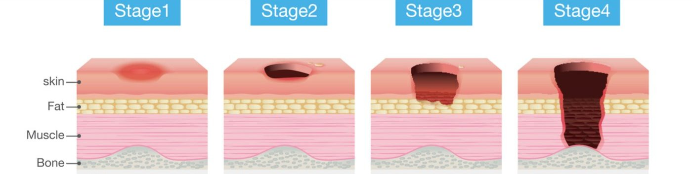

Describe the wound
Privacy first
For sandbox, made-up or teaching photos only until Island Health approves an AI service for patient images. Crop out or cover the face, wristband, MRN/labels, tattoos and room details. The photo is re-encoded in this browser (removes camera GPS/time data), sent only where you choose: the AI server on your own computer, Copilot, or the app you share it to. This page saves nothing.1. Add the photo
JPEG or PNG. iPhone HEIC photos: open and screenshot, or set Camera › Formats › Most Compatible.
Tips: good daylight or exam light, no flash glare, camera square to the wound, a paper ruler beside it, include some surrounding skin.
2. Bedside findings the photo can't show (optional, recommended)
3. Review
AI server setting
Start it on your own computer: ai-server/wound-server.js (see the top of that file). "Copy prompt for Copilot" needs no server: it copies the instructions, then paste them and the photo into Microsoft 365 Copilot Chat.
Dressing categories
Brand names vary by health-authority contract — order by category and nursing will substitute the formulary product. Change intervals are typical maximums; change sooner if the dressing is saturated (strike-through), leaking, lifting, or the wound needs inspection. Always follow the specific product's instructions.
Skin care / prevention products
- pH-balanced no-rinse cleanser (avoid soap and water on fragile skin)
- Moisturizer daily for dry skin (not between toes in diabetics)
- Barrier cream — dimethicone (mild/prevention) or zinc-based (established IAD)
- No-sting liquid barrier film (e.g., Cavilon) — periwound protection, under adhesives, IAD
- Silicone adhesive remover for fragile skin; avoid tape directly on elderly skin
- Incontinence pads: one breathable layer only — stacked pads defeat pressure-redistributing surfaces
What not to use
- Wet-to-dry gauze — non-selective, painful debridement; cools the wound; not recommended
- Hydrogen peroxide, Dakin's/hypochlorite, povidone-iodine soaks on clean granulating wounds — cytotoxic (short-term use on infected/necrotic wounds only, with wound clinician)
- Hydrocolloid / occlusive dressings on diabetic foot ulcers, infected wounds or heavy exudate
- Moist dressings or debridement of dry stable eschar on heels or ischemic limbs
- Silver > 2 weeks without reassessment; cadexomer iodine in thyroid disease, renal failure, pregnancy/lactation, iodine allergy, large wounds
- Tight packing of cavities
Staging (NPIAP) and treatment by stage

Braden scale
Prevention bundle
- Reposition on an individualized schedule (often q2h in bed, q1h in chair); 30° lateral tilt; HOB ≤30° unless contraindicated
- Heels off the bed — pillow under calves or heel-offloading boots; check heels every shift
- Support surface: high-spec foam for at-risk; active / alternating-pressure or low-air-loss for high risk, stage 3–4, or multiple injuries
- Prophylactic silicone multilayer foam on sacrum and heels for high-risk patients (ICU, hip fracture, immobile); peel back and inspect skin daily
- Device-related: check under O2 tubing, masks, collars, casts, catheters, SCDs; pad and move devices
- Moisture: manage incontinence, barrier cream, breathable pads
- Nutrition: screen; dietitian referral if at risk. NPIAP: 30–35 kcal/kg/day, protein 1.25–1.5 g/kg/day (adjust for renal disease); high-protein oral supplement for stage 2+ injuries in malnourished patients
- Hip fracture / ortho: heel offloading and sacral foam from ED; early mobilization post-op
Candidate check
Tick everything that applies. Negative pressure is ordered with (or by) the wound clinician / surgical team at most sites.
Settings and dressing changes
| Item | Usual practice |
|---|---|
| Pressure | −125 mmHg continuous standard. Lower (−75 to −100 mmHg) for pain, fragile tissue, poor perfusion, near vessels, or grafts per surgeon. Intermittent mode may increase granulation but is less comfortable and leaks more. |
| Foam | Black (polyurethane, granufoam): most wounds, promotes granulation. White (polyvinyl alcohol): over tendon, tunnels/undermining, sensitive or painful beds, near vessels. Silver foam if bioburden. Contact layer under foam if fragile bed. |
| Change frequency | Every 48–72 h (at least 3×/week). Every 12–24 h if infected. Grafts: often left 4–5 days per surgeon. Single-use portable systems (PICO-type, ~−80 mmHg) up to 7 days for low–moderate exudate. |
| Foam count | Document the number of foam pieces placed and removed every change (retained foam → infection). |
| Therapy interruption | If therapy is off for more than ~2 h (per manufacturer), remove the foam and apply a conventional moist dressing. |
| Canister | Change when full or at least weekly. Record output each shift. |
| Reassess | Measure weekly. Expect ~15–30% area reduction in 1–2 weeks; if no progress by 2 weeks, re-evaluate (infection, offloading, nutrition, perfusion). |
| Stop / wean | Granulation near skin level, ready for closure/graft, or no benefit. Stop for bleeding, worsening infection, or unmanageable pain. |
Troubleshooting
- Bright red blood in tubing or canister: stop therapy, leave dressing, apply direct pressure, call surgery urgently; check coagulation / anticoagulants.
- Leak alarm: patch with drape; paste/strip around creases; barrier film periwound; bridge the dressing away from skin folds or perineum.
- Pain at changes: premedicate 30–60 min before, instil 1% lidocaine into foam before removal (if allowed locally), use white foam / contact layer, lower pressure.
- Maceration: barrier film, cut foam to wound edge only, increase change frequency.
- Fever / new erythema / odour: remove and inspect wound; cultures; consider infection.
- Discharge: arrange home/community nursing and a portable device; confirm supply funding before the day of discharge.
Wound-related problems
Launch from PowerChart to pull the patient's data.
Healing labs
—
Medications that matter for wounds
—
Wound care order writer
Consult message
When to refer
- Wound clinician: stage 3, 4, unstageable or DTI pressure injury; non-healing >2–4 weeks; NPWT candidates; multiple wounds; complex periwound
- Surgery (urgent): necrotizing infection signs, abscess, wet necrosis, dehiscence with exposed structures, NPWT bleeding
- Vascular: ABI <0.5 or absent pulses, arterial ulcer, DFU with ischemia, toe pressure <30 mmHg
- Ortho / ID: probe-to-bone, exposed bone, suspected osteomyelitis
- Plastics: large stage 4 for flap, skin graft, complex trauma
Sources used
- EPUAP/NPIAP/PPPIA. Prevention and Treatment of Pressure Ulcers/Injuries: Clinical Practice Guideline, 3rd ed. 2019.
- NPIAP Pressure Injury Stages (2016 revised definitions).
- Wounds Canada. Foundations of Best Practice for Skin and Wound Management (pressure injury, DFU, venous leg ulcer, skin tear series).
- Sibbald RG et al. Wound Bed Preparation 2021. Adv Skin Wound Care 2021 (NERDS / STONEES).
- IWGDF/IDSA Guidelines on the prevention and management of diabetes-related foot disease, 2023.
- International Skin Tear Advisory Panel (ISTAP) best practice recommendations, 2018.
- International Wound Infection Institute. Wound Infection in Clinical Practice, 2022 (antimicrobial dressings, 2-week challenge).
- Manufacturer instructions for NPWT systems (therapy interruption, change intervals).
Your health authority's wound formulary and NSWOC protocols take precedence. Content is decision support, not a substitute for wound clinician assessment.